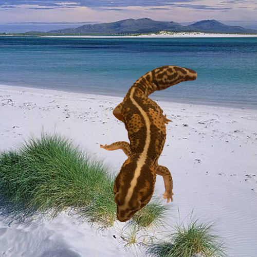

Computer Aided Design
Introduction to Computer Aided Design
As I am well versed in Adobe Photoshop, I used PS to remove the background of a photo instead of GIMP.
 |
How-to:
|
 |
 |
Creating Models


|
How-to:
- I started by sketching the nametag, careful not to place the circle that would be the ring too far at the end in case it ends up breaking.
- After I have finished sketching, I extruded the outer ring to a thickness of 3mm and the base to a thickness of 1.5mm.
- I then used the font “Arial” and wrote down my nickname before extruding it to a thickness of 1.5mm.
- Despite the name tag going smoothly, one thing I could do to “improve” would be to use the trimming tool to trim off the excess lines that overlapped on the sketch just to make it more seamless.